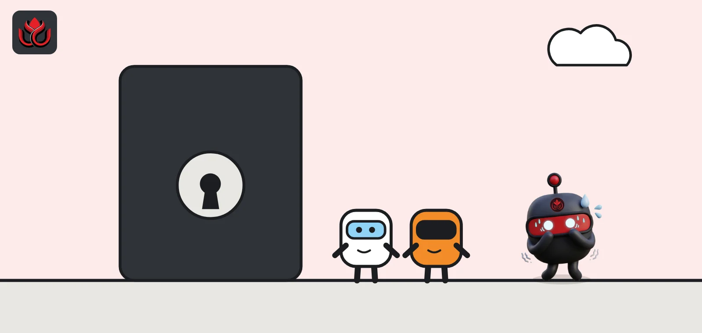
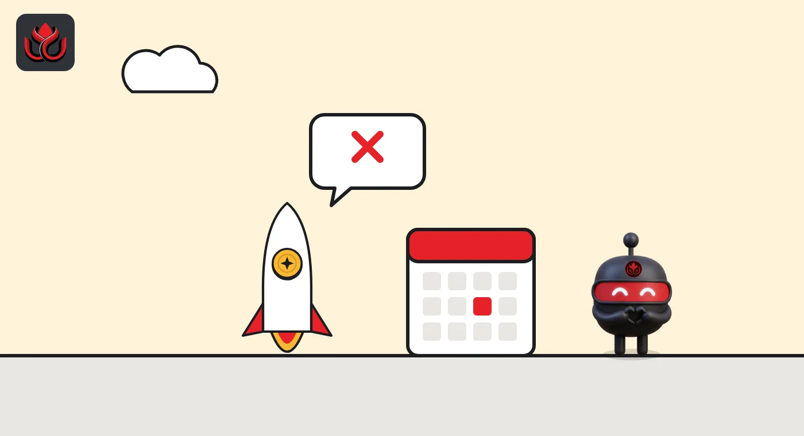
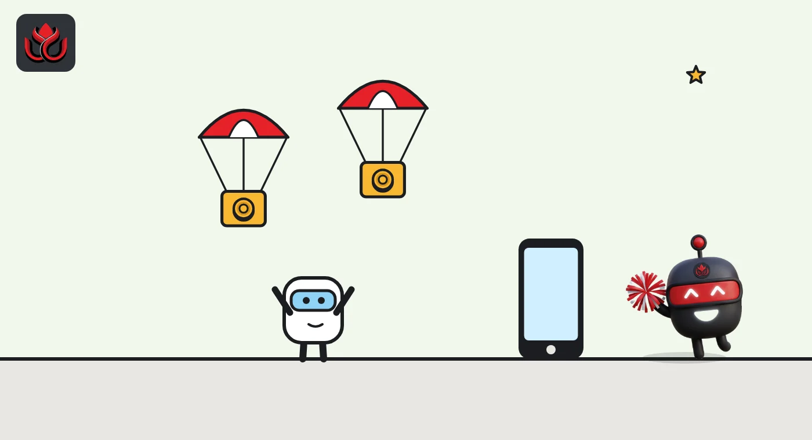

StandX cancels its token and shuts down. Users get one DUSD payout of unknown size
The perpetuals exchange on BNB Chain and Solana dropped its token plans, switched trading to close-only and opened a one-time DUSD airdrop claim on October 31, 2026. It has not said how big the pool is, and the claim closes on December 31.

Key points
- StandX will not launch a token. It is closing and paying one DUSD airdrop from its remaining revenue plus team money, but has published no pool size.
- Claim with the wallet you used on StandX from October 31 until 3:00 a.m. ET on December 31, 2026. Unclaimed allocations are forfeited.
- Open positions will be force-closed on January 15, 2027, and DUSD withdrawals and redemptions end on January 31, 2027.
What StandX announced
StandX, a perpetual futures exchange (perps are contracts that track a crypto price with no expiry date), said on October 15, 2026, that it will not launch the token many users expected and is closing down. In its announcement on X, the team said it would instead pay a one-time airdrop in DUSD, its own dollar token, with no lockup.
StandX said most of the revenue it earned had already gone back to users through earlier programs, SIP-2 and SIP-3. For the airdrop, it will use all of the project's remaining revenue plus extra funds from the team. It admitted the payout won't meet everyone's expectations.
The team cited a strategic review of the business and market conditions. It stressed that user assets are safe, that DUSD is fully collateralized and that users can withdraw in full.
What StandX was
StandX launched its mainnet in November 2025, less than a year before the shutdown. It says it served more than 237,000 users, with total value locked peaking above $200 million. It let trading margin earn yield while positions stayed open, and says it was the first perp exchange to run a rewards program for community market makers. It reports no fund security incidents in its history.
DUSD is StandX's dollar token. Users can redeem it for USDT through StandX's portal or swap it on PancakeSwap and Raydium until the end of January 2027.
The airdrop rewards the usual points-program behavior: pre-deposits, the alpha phase, mainnet trading, market making and referrals. All allocations pass anti-Sybil and wash-trading screens, and StandX can adjust or void allocations for abnormal accounts.

The shutdown, step by step
The wind-down runs in stages, according to the announcement. On October 15, all yield stopped and vault deposits closed. On October 20, all perpetual markets moved to reduce-only mode, which means traders can close positions but not open new ones. New registrations and DUSD minting also closed that day.
On January 15, 2027, StandX will cancel all remaining orders, close every open position at the mark price and settle all vaults. On January 31, 2027, withdrawals and DUSD redemption requests close. Under the current seven-day process, all redemptions should complete by February 7. StandX will also pull its DUSD liquidity from PancakeSwap and Raydium on January 31. After that, any remaining balances still belong to their owners, who must contact support to recover them.
Timeline
Announcement; all yield ends, vault deposits close
Perpetual markets switch to reduce-only; DUSD minting closes
Airdrop checker goes live
DUSD claim opens
Claim closes, unclaimed airdrops forfeited
Remaining open positions closed at mark price
Withdrawals and DUSD redemption requests end

How the claim works
Users claim with the same wallet address they used on StandX, on BNB Chain or Solana. The allocation is paid once in full, with no lockup, and DUSD can be moved, traded or redeemed as soon as it is claimed.
What is missing is the size. StandX has not published a total pool or a per-address formula, so users cannot check how activity maps to dollars beyond what the checker shows them. Anything not claimed by 3:00 a.m. ET on December 31, 2026, is forfeited.
StandX warns that it will never DM users, ask for a private key or seed phrase, or ask anyone to send funds to receive an airdrop. It says claims should only go through its official website.
Grass is paying in dollars too
StandX is not alone in paying users in dollars instead of a new token. Grass, a network where users share spare internet bandwidth, is paying its Stage 2 rewards in USDC, according to its own explainer. The payout covers bandwidth shared in epochs 1 to 19, from October 14, 2024, to June 8, 2026. Grass says the distribution creates no new GRASS tokens and does not change circulating supply, and it cited regulatory uncertainty as the reason for using USDC.
The Grass claim opened on July 22, 2026, and closes on January 22, 2027. Unclaimed rewards will be kept by Grass.
The two cases differ. Grass still has a live token and chose a stablecoin for one reward round. StandX is ending its business and never launched a token. In both cases, users who earned points are receiving dollars, with a hard deadline to collect.
The risks for users
- No published pool. Without a total or formula, users have no outside way to check that allocations are fair.
- Hard deadlines. Missing December 31 loses the claim. Missing January 31 means recovering funds through support instead of a normal withdrawal.
- Phishing. Wind-downs attract fake claim sites. StandX says it publishes updates only on standx.com, its docs site, its X account and its official Discord.
- Counterparty risk until the end. DUSD is only worth face value while StandX honors redemptions, and DEX liquidity disappears on January 31.
LC Insight analysis
This section is our reading of the facts above, not a statement of fact.
- We think StandX is a warning about points programs. Users farmed for a token that never came, and got leftover revenue instead. It is an honest exit, but it proves points carry no promise.
- Paying in DUSD with no lockup is the kindest of the bad options. Launching a token into a weak market could have left farmers holding something worth less than this payout.
- The bigger lesson is about competition. If 237,000 users and a $200 million deposit peak cannot keep a perps exchange alive, the sector is more crowded than its volumes suggest.
What's next
- Whether StandX publishes the total DUSD pool or a formula
- Claim rates before the December 31 deadline
- DUSD redemptions running smoothly into February
- Other points-based projects that drop token plans
Disclaimer. This article is based on public information and the sources listed below as of the update time shown. It is for information only and is not investment, legal or tax advice. Figures may change as companies and authorities publish new data.